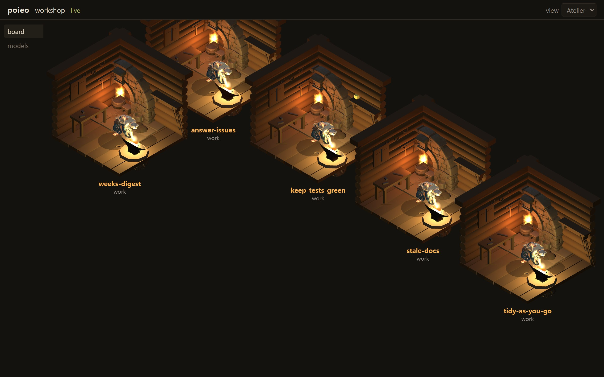

Write down the work you want done.
The models on your own machine keep it running, and you read what they did in the morning.
git clone https://github.com/luceinaltis/poieo && cd poieo && pip install .

Sixty seconds
Set a folder up
mkdir ~/board && cd ~/board
poieo init
It looks at this machine once — Ollama, LM Studio, vLLM, llama.cpp, a
Claude key — and writes down whatever answered. No model yet?
poieo init --mock lays the same project out with a
stand-in that spends nothing.
Write a card
# ~/board/tasks/keep-green.yaml
name: keep the tests green
folder: ~/code/thing
prompt: |
Run the tests. If one fails,
find out why and fix it.That is the whole file. Which model serves it, how often it fires, where the output goes — every one of those has a default.
Leave it running
poieo daemon
Every card in tasks/ runs from now on, and the board is at
127.0.0.1:8484. Drop a file in to add a task; delete it to
stop one. There is nothing else to register it with.
Three words, and no fourth
task
A name, a folder, and a prompt. One file, which you can read.
run
One pass through it. It succeeded, it failed, or it found nothing to do.
change
What a run did to your files — which you accept, or throw away.
Everything underneath — how a run is isolated, how a change is stored, how it is undone — is machinery, and machinery stays out of the way.
The night, and the morning after
A task does not work in your project. It works in a private copy, so the checkout you left open is exactly as you left it. Each run leaves at most one change, carrying the model's own sentence about what it did.
In the morning you open the one that left something: read the diff, and accept it — the only moment poieo ever writes to your own branch — or discard it, recoverably. A run that found nothing to do is not a failure and leaves nothing to read.
Each task also keeps a journal it reads before every run, so tonight starts where last night stopped — and you can put a line in it yourself.

Why it runs on your machine
- Local models first
- A resident that costs nothing per token can be left running. Cloud models plug into the same mechanism as an option, never a requirement.
- Files, not a database
- Tasks, models, journals and run logs are YAML, Markdown and JSONL you can read, diff and commit. Nothing is true because an index says so.
- Nothing touches your files until you accept it
- Autonomy without undo is a different, scarier product.
- Every run is auditable
- Which model answered, which branch it took, which files it touched, which commands it ran, what it cost. One log file answers “what did this thing do last night?”.
It is one person's machine, running one person's work
No accounts, no server, no team features, and no plan to have them. The graph, the models, the daemon, the model's hands, the private copy and the undo, container isolation, the memory a project keeps, and the board are built and in use. Making a card from the browser is not — that is still a file you write.